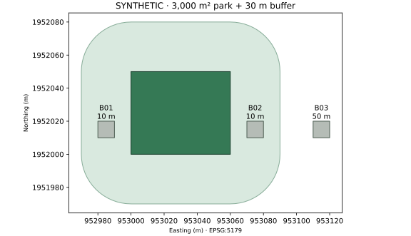

PART 02 / CHAPTER 07
07 · 공원 주변 건물을 찾는 버퍼와 공간조인
3,000㎡ 가상공원과 건물 세 동으로 거리·경계·다중 매칭을 이해합니다.
목표: 공원 30m 이내 건물을 찾고 최단 직선거리를 계산합니다. 선수: GeoDataFrame, CRS, Python 함수. 시간: 40~60분. 자료: 직접 생성하는 가상 폴리곤. 실제 필지·건물을 표현하지 않습니다. 실행 환경은 버전 안내를 따릅니다.
개념
버퍼(buffer)는 도형에서 일정 거리 안의 영역입니다. 공간조인(spatial join)은 위치 관계로 두 표를 연결합니다. 공원과 건물을 intersects로 조인하면 버퍼에 닿는 건물의 속성과 공원 ID를 같은 행에 놓을 수 있습니다. 도형 자체를 잘라내는 연산은 overlay 또는 intersection입니다. 조인은 겹친 부분만 남기지 않습니다. GeoPandas sjoin 문서
속성을 붙일까, 겹친 도형을 만들까
공간 관계를 설명하는 별도 가상 도형이며 축척이 없습니다. 07장 실습의 30m 버퍼 수치를 다시 그린 그림은 아닙니다.
직접 제작한 교육용 개념도 · 설명 근거: GeoPandas 공간조인 · GeoPandas 겹치기
왜 필요한가
공원 주변의 잠재 이용 건물을 파악하거나 도로·시설의 이격 관계를 점검하는 첫 단계입니다. 이번 기준은 공원 폴리곤에서 건물 footprint까지 30m입니다. 출입구까지 걸어가는 거리는 도로 연결·횡단·장애물을 반영하는 후속 네트워크 분석에서 구합니다.
핵심 API
| API | 이번 용도 | 주의 |
|---|---|---|
GeoDataFrame(..., crs=...) |
도형과 속성표 연결 | CRS를 지정해도 좌표가 변환되지는 않음 |
to_crs(...) |
좌표 변환 | 원자료 CRS를 먼저 확인 |
buffer(30) |
30m 주변 영역 | 투영 CRS와 m 단위 |
sjoin(..., predicate="intersects") |
버퍼와 접촉/중첩한 건물 | 한 건물이 여러 공원과 매칭될 수 있음 |
sjoin_nearest(..., distance_col=...) |
가장 가까운 공원까지 거리 | 동률이면 여러 행, 제한 거리 밖이면 결측 |
area / distance |
면적/거리 | geometry 간 거리이며 중심점 거리와 다름 |
EPSG:5179는 이번 가상 예제의 m 단위 좌표계입니다. 실제 한국 자료가 모두 5179라는 뜻은 아닙니다. set_crs와 to_crs의 구별은 공식 좌표계 안내를 참고합니다.
최소 실행 예제
아래 코드를 실행한 뒤 analyze()를 호출합니다. 전체 실행 파일은 지도와 GPKG·GeoJSON·GeoParquet도 저장합니다.
import geopandas as gpd
from shapely.geometry import box
def analyze():
# Synthetic coordinates placed in a metre-based Korean projected CRS.
x, y = 953000, 1952000
park = gpd.GeoDataFrame(
{"park_id": ["P01"]},
geometry=[box(x, y, x + 60, y + 50)], crs="EPSG:5179",
)
buildings = gpd.GeoDataFrame(
{"building_id": ["B01", "B02", "B03"],
"use": ["residential", "community", "residential"]},
geometry=[box(x-20, y+10, x-10, y+20),
box(x+70, y+10, x+80, y+20),
box(x+110, y+10, x+120, y+20)], crs=park.crs,
)
zone = park.copy()
zone.geometry = park.buffer(30) # 30 m from the park FOOTPRINT
hits = buildings.sjoin(zone, how="left", predicate="intersects")
nearest = buildings.sjoin_nearest(
park, how="left", max_distance=100, distance_col="distance_m",
)
# Count distinct IDs because multiple parks could match one building.
count = hits.loc[hits["park_id"].notna(), "building_id"].nunique()
print(f"Park area: {park.area.iloc[0]:.0f} m²; nearby buildings: {count}")
print(nearest[["building_id", "distance_m"]].to_string(index=False))
return park, buildings, zone, hits, nearest
park, buildings, zone, hits, nearest = analyze()
검산 결과: 면적 3,000㎡, 30m 버퍼에 해당하는 건물 2동, B01/B02/B03의 최단거리 10m / 10m / 50m입니다. 건물 너비가 있으므로 중심점에서 잰 값과 같지 않습니다.
저장소 루트에서 전체 실습을 실행합니다.
python books/python-geospatial/examples/buffer_join.py --out generated/vector
조경·도시 실무 예제
GIS건물통합정보의 건물 도형과 검증한 공원 경계를 사용합니다. 파일의 실제 필드 사전을 보고 건물 식별자·용도·높이를 프로젝트 필드로 매핑합니다. 높이 누락은 0m가 아니며 층수도 높이 실측값이 아닙니다. 공원 포인트만 있는 데이터는 경계 버퍼 분석에 그대로 대체할 수 없습니다.
- 두 자료의 기준일·CRS·유효 geometry와 중복 ID를 확인하고 동일한 분석 CRS로 변환합니다.
- 공원 footprint 또는 실제 출입구 중 분석 목적에 맞는 기준을 선택합니다.
- 건물의 일부만 버퍼에 걸쳐도 포함할지, 대표점 기준으로 판단할지 명시합니다.
- 매칭 행 수, 고유 건물 수, 미매칭 수를 따로 집계합니다. 여러 공원의 서비스가 겹치면 이중계상을 조정합니다.
- OSM 보행망과 출입구를 연결하고 최단 경로로 접근성 결과를 보완합니다. 법적 도로 접근성과 OSM 연결성도 구별합니다.
이 입출력 확장은 실제 파일을 준비한 뒤 실행합니다. 해당 파일이 없으면 실행되지 않습니다.
from pathlib import Path
path = Path("data/raw/buildings.gpkg")
buildings = gpd.read_file(path, engine="pyogrio", use_arrow=True)
if buildings.crs is None:
raise ValueError("제공기관의 원자료 CRS 확인이 필요합니다")
buildings = buildings.to_crs(5179)
Path("data/processed").mkdir(parents=True, exist_ok=True)
buildings.to_parquet("data/processed/buildings.parquet", index=False)
use_arrow=True에는 pyarrow가 필요합니다. GPKG는 GIS 편집·레이어 교환, GeoParquet는 반복 분석과 속성 중심 저장에 유용합니다. 지원 형식과 driver는 공식 입출력 안내를 확인합니다.
시각화

가상 도형 지도입니다. 선택적으로 OSM 배경을 켤 수 있습니다. 지도 라이브러리와 배경지도는 인터넷 연결이 필요합니다.
지도를 별도 화면에서 보기 ↗MarkerCluster는 가까운 마커의 화면 표시를 묶는 기능이며 통계적 군집분석이 아닙니다. Folium의 좌표 입력은 [위도, 경도], GeoJSON 좌표는 [경도, 위도]입니다. 지도용 geometry만 EPSG:4326으로 변환합니다. Folium MarkerCluster
흔한 오류
| 증상 | 원인 → 수정 |
|---|---|
| 버퍼가 대륙 크기로 보임 | 경위도에서 30을 사용 → 분석용 m 좌표계로 변환 |
| 조인 뒤 건물 수가 증가 | 다중 공원 매칭 → 분석 단위별 고유 ID 집계 |
| 경계 위 점이 누락 | within은 경계를 포함하지 않음 → 목적에 맞게 intersects/covered_by 검토 |
| 거리 0m가 반복됨 | 도형이 겹치거나 접함 → 중심점 거리와 구별 |
| nearest 결과에 빈값 | max_distance 밖에 존재 → 결측 유지, 제한 거리 재검토 |
코드가 op 인수를 거부 |
오래된 API → predicate로 변경 |
geometry가 유효하지 않으면 원인과 수정 결과를 비교합니다. 무조건 buffer(0)를 적용하지 않습니다. Shapely 사용자 안내
연습문제
- 버퍼를 15m와 5m로 바꿨을 때 건물 수를 예상하고 검산하세요.
- 공원 하나를 추가해 같은 건물이 두 공원에 연결되는 경우를 만들고 행 수와 고유 건물 수를 비교하세요.
- “30m 버퍼 안이면 공원에 쉽게 접근할 수 있다”는 주장에 반례를 두 가지 제시하세요.
검산 힌트
15m일 때 2동, 5m일 때 0동입니다. 담장과 출입구 위치, 횡단할 수 없는 도로는 직선거리를 보행거리와 다르게 만듭니다.
다음 단계
08장 clip·overlay·intersection·dissolve에서 겹치는 면적을 계산합니다. 지형은 18장 DEM, 보행 경로는 7부 도시 네트워크에서 이어집니다.
출처
공식 API 확인일: 2026-09-30. 이번 그림의 원자료는 외부 공공데이터가 아닌 합성 도형입니다.
- GeoPandas nearest join: 거리, 동률, 지리좌표계 주의.
- GeoPandas 집계: 그룹별 도형·속성 집계의 확장.
- OpenStreetMap 저작권: 선택 배경지도 및 실제 OSM 활용 시 적용.